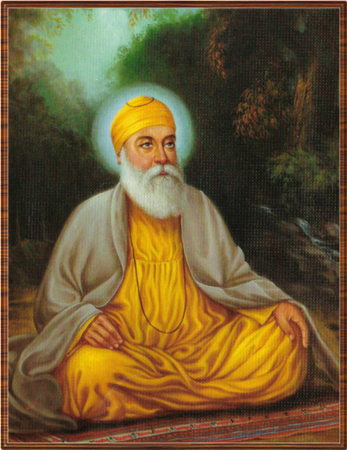

Sikhism


 |
Mother Name: Mata Tripta Ji Sister Name: Bibi Nanaki ji Date of Birth: 15 April, 1469 Age: 70 years Place of Birth: Rai Bhoe Di Talwandi Wife: Mata Sulakhni Ji Children: Sri Chand Ji & Sri Lakhmi Das Ji Guruship: 1469 to 1539 Joti-jot: 22 September ,1539
|
Guru Nanak Dev Ji, the first Guru of Sikhs, was born in 1469 in Talwandi. His father was Mehta Kalu and his mother was Mata Tripta. His older sister was Bibi Nanaki. From birth, Guru Ji was seen as a special figure and was God himself in a human form. As the founder of a new religion, Guru Nanak set down strong foundations for his successors and his followers. One of the most important teaching by Guru Nanak Dev Ji includes to help the needy and the poor. Guru Ji was always ready to help the poor and he served food to them. In fact, Guru Ji often invited the needy and the poor into his house. Another example of Guru Ji helping the poor and the needy occurred while he was a storekeeper. Guru Nanak Dev Ji used to spend a large part of his wages in order to feed the poor and the hungry. Guru Nanak Dev Ji also taught us that there is one God and he is the Truth and Ultimate Reality. To emphasize this point, Guru Ji said, "There is neither Hindu nor Muslim." In God's eyes, the labels of Hindu, Muslim, Jew, Christian, etc. don't mean anything. Guru Ji also taught that God has created the universe and he is everywhere. In order to spread these messages, Guru Nanak Dev Ji took four long journeys. On these journeys, Guru Ji had many followers and was able to relate his message to many people. Guru Nanak Dev Ji taught us that all human beings regardless of skin color, wealth, caste, and gender are created equal. When Guru Ji left this world at the age of 70, in 1539, he had laid down the foundations for a great religion.